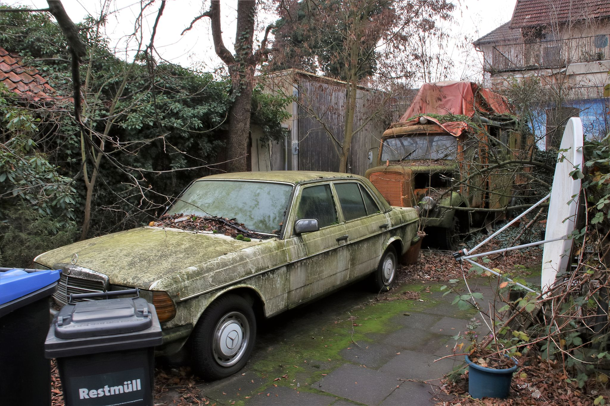
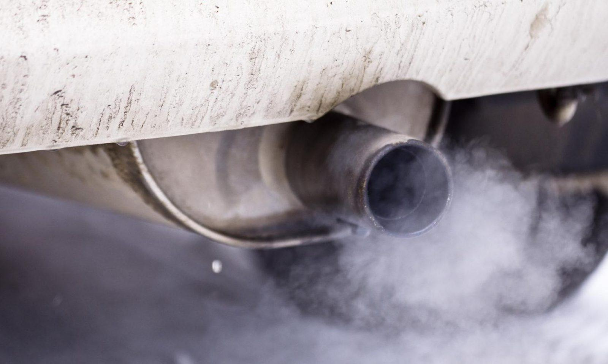
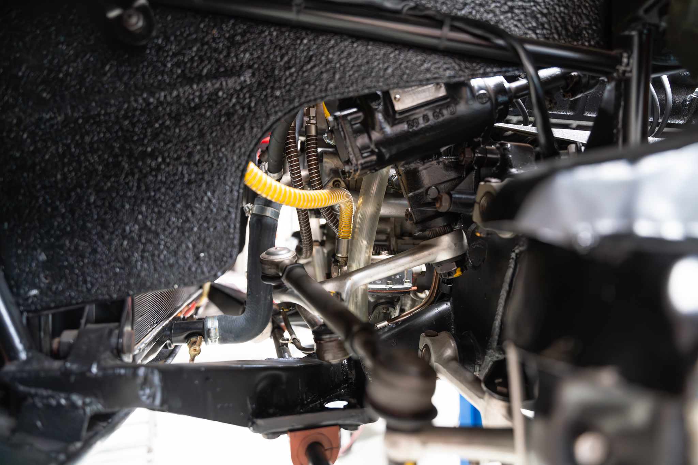

Buying Guide
Introduction: Why a Proper Buying Guide Matters
Buying a classic performance or luxury car is more than just a transaction—it’s an investment in an experience. Whether it's the high-revving symphony of an M3, the old-world refinement of a Mercedes-Benz, or the bespoke craftsmanship of an Alpina, these cars represent an era when driving was more than just getting from point A to B. But with that experience comes responsibility. Unlike modern cars, these machines require an informed approach when buying—one that goes beyond glossy listings and well-lit photos.
A well-maintained example can provide years of enjoyment, while a neglected one can quickly become an expensive regret. This guide is designed to help enthusiasts separate the gems from the money pits, covering everything from model-specific quirks to test-drive essentials. Whether you're hunting for a homologation legend or a well-preserved grand tourer, understanding what to look for will help you buy with confidence—ensuring your dream car doesn’t turn into a nightmare.
Inspection Checklist: What to Look for Before You Buy
A proper pre-purchase inspection is essential when considering a classic performance or luxury car. These vehicles often feature complex engineering, bespoke parts, and age-related wear that can be costly to address. A thorough evaluation can mean the difference between a well-preserved example and a money pit.
Starting with the exterior and bodywork, rust is the primary concern, particularly in areas like the wheel arches, rocker panels, suspension mounting points, and underbody. Any bubbling paint or visible corrosion can indicate deeper structural issues. Uneven panel gaps or misaligned bodywork may point to prior accident damage, so careful examination of these details is key. The paint should be consistent across all panels, and signs of overspray or mismatched colors could suggest previous repairs. Additionally, inspecting the condition of glass and trim is important, as rare or discontinued pieces can be difficult and expensive to replace.

Inside the car, the interior and electronics should be tested thoroughly. Worn-out seat bolsters can indicate high mileage, while sagging headliners or cracked dashboards are common in older models. Every electrical function—windows, locks, climate control, infotainment, and seat adjustments—should be checked, as electrical issues can be both frustrating and costly to fix. Any illuminated warning lights, such as the check engine, ABS, or airbag lights, should be investigated further. Unusual odors inside the cabin may also hint at hidden problems; a musty smell could point to water leaks, while a burning scent might indicate electrical faults.
A cold start test will reveal a lot about the car’s engine and mechanical condition. The engine should fire up smoothly without excessive smoke, knocking, or rattling sounds. Checking the oil condition is essential—thick sludge or a milky appearance could indicate neglect or even internal engine damage. Coolant levels should be stable, and any signs of overheating or bubbling in the reservoir could be a red flag. The car should idle smoothly, and any rough running, hesitation, or misfires may suggest ignition or fueling issues.
The transmission and drivetrain should operate smoothly under all conditions. Automatic transmissions should shift seamlessly without hesitation or harshness, while manual gearboxes should engage cleanly with no crunching or excessive resistance. A slipping clutch will cause the engine to rev abnormally without a corresponding increase in speed. Driveline noises, such as whining or clunking, could indicate worn differentials or driveshaft components, both of which can be expensive to repair.
The suspension and steering play a critical role in how the car drives. Excessive bouncing, knocking noises, or vague steering could suggest worn-out shocks, control arms, or bushings. Underneath the car, rubber bushings should be checked for dry rot or cracks, as they significantly affect ride quality and handling. Braking performance is another key area—any pulsation, squealing, or pulling to one side could indicate worn pads, warped rotors, or sticking calipers.
Finally, service history and documentation can provide valuable insight into how well the car has been maintained. A comprehensive service record with receipts is ideal, as missing history or large maintenance gaps may suggest neglected care. Certain models have well-known weak points, such as timing chain wear, rod bearing issues, or electrical problems—if these haven’t been addressed, future repairs could be costly. Verifying title history is equally important, ensuring there are no undisclosed accidents, salvage records, or questionable mileage discrepancies.
Taking the time to inspect a car properly before purchase can save thousands in unexpected repairs. If anything seems off, it’s always worth either walking away or having a specialist perform a professional inspection. A careful approach will ensure that your purchase is a well-sorted example, ready to be enjoyed rather than becoming an expensive project.
This checklist serves as a general guide, covering the most important aspects of inspecting a used performance or luxury car. However, every model has its own unique characteristics, common issues, and maintenance quirks that should be taken into account. Each car page on this site includes a more specific checklist tailored to that particular model, highlighting known problem areas and essential maintenance tasks. Whether it’s timing chain concerns on one car or suspension wear on another, these additional details will help you make an informed decision. Taking the time to research and inspect thoroughly will ensure that your next purchase is not just exciting, but also a sound investment.